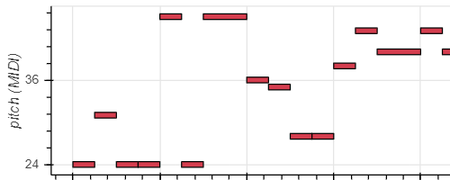
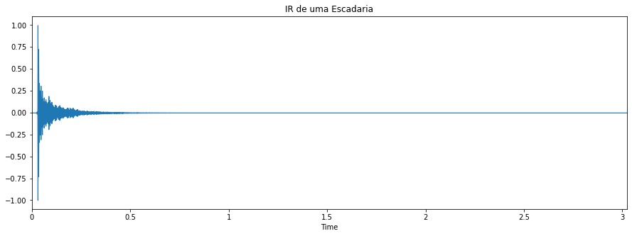

Áudio criado em MIDI
A musica utilizada para o desenvolvimento da atividade foi "48 Crash", de Suzi Quatro

A seguir está o áudio MIDI criado
Resposta ao Impulso em tres ambientes diferentes

Tocando "48 Crash" nesses três ambientes.
Tocando "48 Crash" na escadaria
Tocando "48 Crash" no auditório
Tocando "48 Crash" na igreja